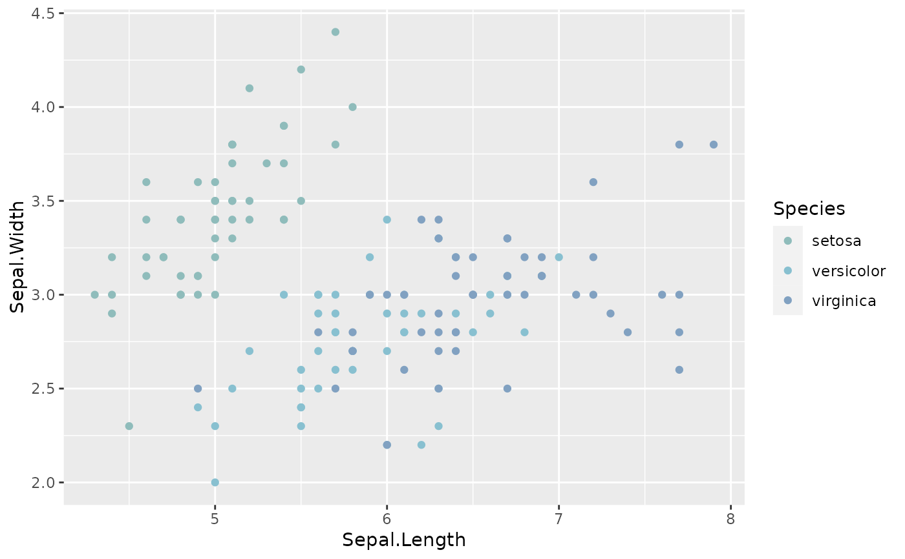

These functions provide the option to use the discrete and dynamic palettes
along with the ggplot2 package. It goes without saying that it requires
ggplot2 to work.
Usage
scale_colour_paletteer_d(palette, direction = 1, dynamic = FALSE, ...)
scale_color_paletteer_d(palette, direction = 1, dynamic = FALSE, ...)
scale_fill_paletteer_d(palette, direction = 1, dynamic = FALSE, ...)Arguments
- palette
Name of palette as a string. Must be on the form packagename::palettename.
- direction
Either
1or-1. If-1the palette will be reversed.- dynamic
toggles between the discrete palettes and the dynamic palettes. Defaults to FALSE which indicates discrete palettes.
- ...
additional arguments to pass to discrete_scale
Details
Available package/palette combinations are available in the data.frame
palettes_d_names and
palettes_dynamic_names.
Examples
library(ggplot2)
ggplot(iris, aes(x = Sepal.Length, y = Sepal.Width, colour = Species)) +
geom_point() +
scale_colour_paletteer_d("nord::frost")
